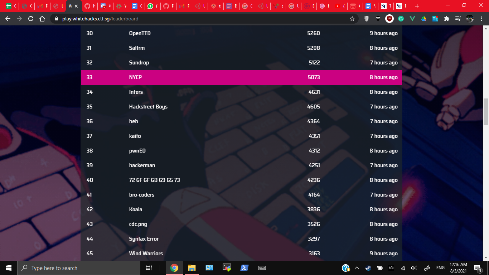

A Cybersecurity Competition hosted by SMU. Their resoruces can be found here
I participated it over the weekend (6 to 7 March 2021) for fun, with undefined_func
In the competition I basically only did Pwn. The Pwn challenges were quite fun. Piggy Bank and Piggy_Bank_Revenge were basic. Puddi Puddi was a good challenge to get people interested in binary exploitation and buffer overflows. I almost solved Hopscotch (Overcome the Bad Canary and put shellcode on the stack but just could not run it for some reason and spent 2.5h). For some reason though I ended up learning to use Cutter (The reverse engineering program) to modify the binaries, which was fun but totally useless
In the end our result felt shit though, being at 33rd place. Is this what NS does to your brain? I also totally didn't read the CSIT Challenges, which were about Android Apps (Fun) and seemed doable. I guess you should read all the challenges instead of focusing on only one topic.

List the challenges I have completed. Example:
Here are the main challenges I did (or helped out with in order). Just traverse the directories to find them
Pwn/Piggy Bank (Just look at the image, you basically netcat into the server and give a negative value)Pwn/Piggy_Bank_RevengePwn/Puddi PuddiThe writeup format follows what they prefer, so its different from my usual writeup format. Also I'm an NSF now so my writeups are kind of shit.
Check my teammate's writeups here
Here are some much better writeups